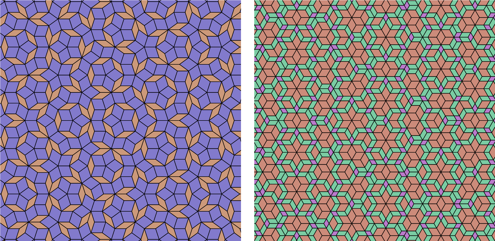

Quickstart: using HyperTiler as a library
Everything the desktop app does to build a tiling is available as plain Python. This page shows some of the functionalities, and walks you through creating tilings rather than relying on parsing the API reference.
After installation via PyPI, we can generate and save a tiling in 6 lines. First, we’ll make a dual-grid tiling:
from hypertiler import regular_vectors, TileMaker, classify_areas, make_colors, write_svg
vector_data = regular_vectors(fold=5, shift="regular")
tm = TileMaker(vector_data, grid_len=6)
poly_type, unique_areas = classify_areas(tm.poly_areas)
palette = make_colors(len(unique_areas))
colors = [palette[t] for t in poly_type]
write_svg("penrose.svg", list(tm.points), colors, edge_color=(0, 0, 0), edge_width=0.02)
We’ll go through line-by-line to see what’s happening here.
Dual-grid tilings
Simple setup
regular_vectors generates a pair of isotropic vectors for a given symmetry (fold). These are the tiling and grid vectors, and regular_vectors also gives us a set of grid shifts to produce a regular tiling (only two grids intersecting at one point).
regular_vectors(fold, shift=...) accepts the same four modes as the GUI’s
“Grid shifts” dropdown:
"regular"(default) - an evenly staggered offset that avoids degenerate multi-line crossings. Sensible for most tilings, sums to 1 or ."zero"- no offset at all - grids are constructed at the origin. Expect polygons!"random"- offsets drawn independently and uniformly from(-1, 1)."regular_random"- random offsets, normalised to sum to 1.
Building the vector set by hand
Using the simple setup is nice, and covers the common cases, but in general TileMaker just needs an
(N, 4) array - one row per grid vector - if you want full manual control
(matching the GUI’s Advanced Settings table):
Column |
Meaning |
|---|---|
0 |
Tile-space vector length (“Tile scale” in Advanced Settings) |
1 |
Grid-space vector length (“Grid scale”) |
2 |
Angle, in degrees |
3 |
Shift - this family’s line offset along its own vector |
So we could manually re-make the Penrose-style tiling, or create a set of vectors that make a quasiperiodic hexagonal tiling:
import numpy as np
from hypertiler import TileMaker
penrose_vectors = np.array([
(1.0, 1.0, 0.0, 0.2),
(1.0, 1.0, 72.0, 0.2),
(1.0, 1.0, 144.0, 0.2),
(1.0, 1.0, 216.0, 0.2),
(1.0, 1.0, 288.0, 0.2),
])
penrose = TileMaker(penrose_vectors, grid_len=6)
hex_vectors = np.array([
(1.618, 0.618, 0.0, 0.16),
(1.0, 1.0, 60.0, 0.16),
(1.618, 0.618, 120.0, 0.16),
(1.0, 1.0, 180.0, 0.16),
(1.618, 0.618, 240.0, 0.16),
(1.0, 1.0, 300.0, 0.16),
])
hex_tile = TileMaker(hex_vectors, grid_len=6)
Which would give us, respectively:

Making and colouring the tiling
tm = TileMaker(vector_data, grid_len=6)
poly_type, unique_areas = classify_areas(tm.poly_areas)
palette = make_colors(len(unique_areas))
colors = [palette[t] for t in poly_type]
TileMaker takes the vector_data and a grid_len argument, which defines the size of the patch of the tiling. Techinically this can go as high as you want, but be warned that viewing tilings will start slowing down on a standard laptop around grid_len = 50. TileMaker then makes the tiles (!).
classify_areas classifies the tiles you give it based on tile area, so that we can colour each tile-type uniquely. Note that we can also pass tm.ngon_areas if we know we’re creating a tiling with singular crossings. If you don’t know whether you’re going to make a singular tiling, and to stay consistent with the rest of our methods, one would write:
all_points = list(tm.p_points) + list(tm.points)
all_areas = list(tm.ngon_areas) + list(tm.poly_areas)
type_idx, unique_areas = classify_areas(all_areas)
make_colors() creates a unique set of colours for our tile set, with the next line distributing them accordingly. If you don’t like the palette generated, just call it again - the starting hue is randomised each time - or pass scheme="tonal" with a base_color for shades of one colour instead of the full hue circle. You can also skip it entirely and hand-write your own list of (r, g, b) tuples, one per entry in unique_areas.
Finally:
write_svg("penrose.svg", list(tm.points), colors, edge_color=(0, 0, 0), edge_width=0.02)
or
write_png("penrose.png", list(tm.points), colors, edge_color=(0, 0, 0), edge_width=1, size=(1000, 1000), background=(255, 255, 255))
will save your tiling as either an .svg or a .png.
Substitution tilings
Substitution (inflation) tilings are driven by a rules SVG you prepare in
Inkscape - see Substitution tiling for how to author one. Once
you have one, inkTile runs the substitution and hands back a flat list of
(tile_type, coords) tuples:
from hypertiler import inkTile, write_svg
it = inkTile(gen=4, tile="my_rules") # reads my_rules.svg
tiles = it.final_tiles # [(tile_type, coords), ...]
colors_by_type = {"T1": (30, 60, 120), "T2": (200, 200, 200)}
polys = [coords for _, coords in tiles]
colors = [colors_by_type[t] for t, _ in tiles]
write_svg("substitution.svg", polys, colors)
See the Python API reference for the full parameter list of every function used here.